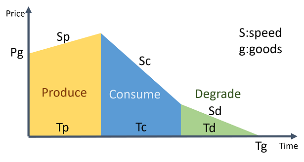
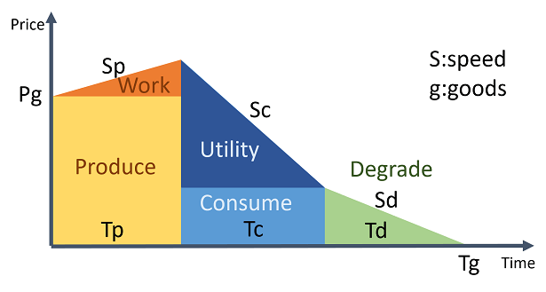

ポリゴングラフと雇用問題
ポリゴングラフは，辺と節に値のあるグラフで，節の値の差と辺の値から稜を定義できる．プロジェクト管理の手法であるクリティカルパス法を応用したもので，仕事のペースを計量できるところが売りだ．ペースの数学である．
今回はポリゴングラフを経済学に応用してみる．下の図は財について表したポリゴングラフである．横軸に財の経過時間，縦軸に価値の大きさをとる．財の時間経過は3段階に分けられる．生産と消費と分解である．
生産は財の初期価値を労働によって上昇させる．消費は財から効用を得る．分解は財の価値がなくなるまでの過程である．この3段階をポリゴングラフで分析したものが下図である．財の価値を上昇させるのは労働であり，財の価値を減少させるのは効用であり，財が無価値になっていくのが分解である．
このポリゴングラフから，次のことが分かる．労働の面積を大きくするには，労働で価値を高くすることや，財の生産に時間をかけること，さらに財の原価を低くすることである．労働の面積が大きくなれば，仕事の量が増えるので，一般にその財は雇用を生む．
また，効用を大きくするには，まだ使えるところが少なくなるまで消費することや，ゆっくり使うことである．生産に時間と手間をかけ，消費にもゆっくりと手入れをすることで，労働と効用が大きくなる．
このポリゴングラフのモデルから導ける雇用の三原則として，
1. 労働による価値の増大には限界がない．
2. 財をその価値の増減が大きくなるように利用する．
3. 効用が労働を上回らないように財を消費する．
この3つによって仕事の量は最大化できる．
品質を粗くしていたり，加工する手間を減らしたり，自分の働きの度を越えて消費していると，雇用を生みにくい．品質・手間・消費．ここに仕事を生み出すチャンスがある．なんだか耳が痛いが，信じる人をひとり残らず導く神さまの仕事に比べれば，どの仕事も小さく軽いものである．経済の未来は明るい．